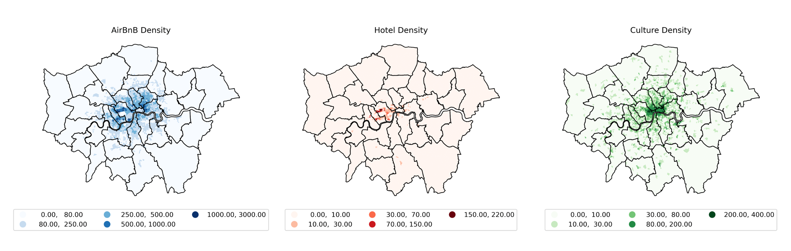
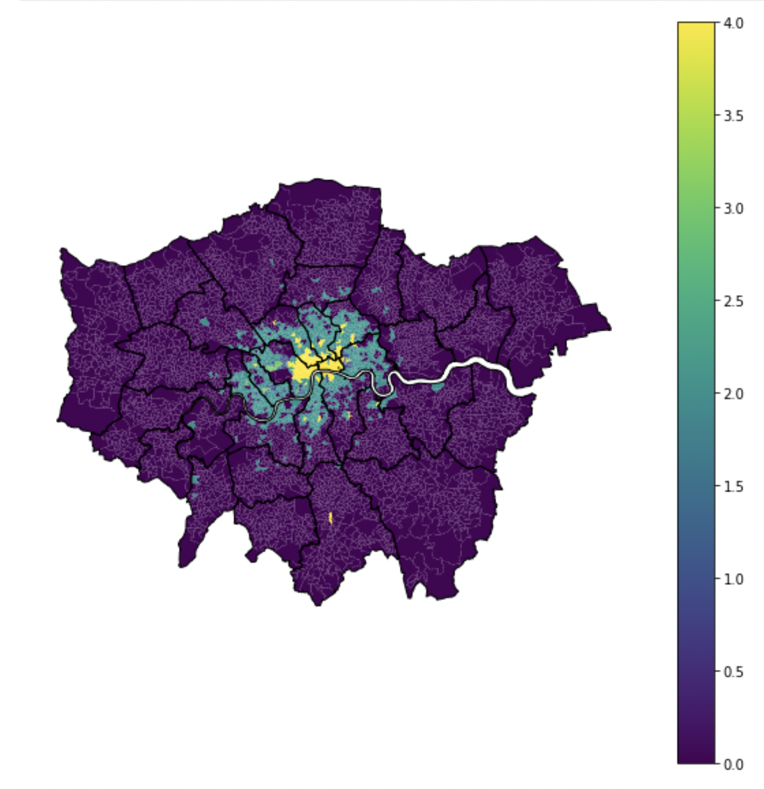
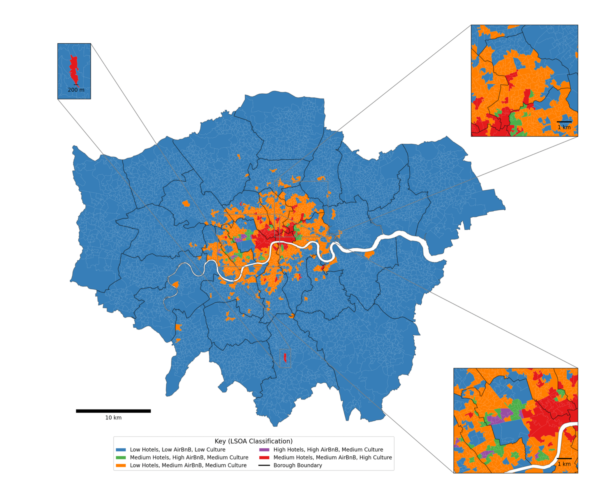

3 Investigating the geospatial relationships between cultural institutions, hotels, and airbnb: A policy brief
3.1 Technical Skills
Python, k-means cluster analysis, visualisation, sckit-learn, geopandas, matplotlib
3.2 Premise
In response to growing contention of Airbnb’s impact on local housing market and affordable homes, I worked with a group of 4 to create a policy brief which provided an alternative explanation to the spatial distribution of Airbnb listings, in relations to existing hotel industry and cultural infrastructures in London.
This analysis is generated and executable in Python. Code and policy brief available on Github.

As anticipated, the distribution of Airbnb listings is very similar to instances of cultural infrastructure, with the highest density of listings in the centre of the city and a gradual sprawl outward towards Zone 2. This supports the prediction that Airbnb listings cluster around areas with many cultural offerings in the city. This is distinct from patterns in the hotel industry; 50% of hotels are listed in the Westminster and Kensington and Chelsea alone. The hotel industry loosely follows the distribution of cultural infrastructure in central London, with fair proximity to more established and well-known cultural spaces. However, there is a clear disconnect between hotel supply and cultural offerings beyond Zone 1. Indeed, the hotel industry is much more rigid in operations due to the higher barriers to market entry (investment, planning permission and overheads). The slower adjustments in hotel supply therefore provide an opening in the market for Airbnbs, which are able to react quickly to market trends, responding to growing areas of demand with greater flexibility than hotels.
On a more granular scale, the analysis identified 5 distinct groups of hotel, Airbnb and cultural infrastructure agglomeration. Areas with relatively low hotel density, and medium cultural and Airbnb density illustrate Airbnb’s advantage as a flexible method of accommodation that can meet the demand of areas with many cultural amenities. Areas with these Airbnb-hotel-culture market proportions, which dominate most of central London and its surrounds, raise concerns about the potential reduction in housing stock and displacement of incumbent residents.

3 areas (Westminister, Croydon, East London area) were used as case studies to illustrate place-specific nuances for the brief.